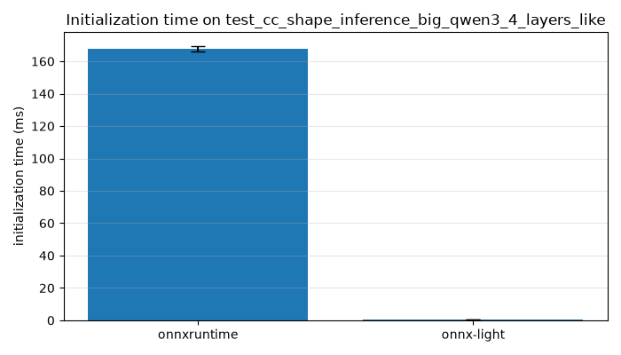

Note
Go to the end to download the full example code.
Benchmark the initialization steps: onnxruntime vs onnx-light#
Before a model can be run, both onnxruntime and onnx_light
go through an initialization phase that turns a ModelProto into an
object ready for inference. For onnxruntime this happens when the
onnxruntime.InferenceSession is created: the graph is optimized,
every node’s kernel is resolved and the weights are loaded. For
onnx_light the equivalent step is the construction of
ReferenceEvaluator, which prepares the
persistent RuntimeContext used by every subsequent
run() call.
This example measures that initialization time for both backends on the
Qwen3-like model retrieved from the backend test cases through
onnx_light.onnx.backend.collect_test_cases_by_name(). The backend
model stores its large weights as shape/dtype metadata only, so this
example first materializes random weights (both backends need real weight
bytes to build a session) and then times the initialization step of each
backend, printing a comparison table and a bar chart.

-- get the model from the backend tests
-- materialized 39 weight initializer(s)
-- model has 393 nodes
-- serialized model size: 256,995,440 bytes
-- benchmark onnxruntime initialization
-- benchmark onnx-light initialization
name median avg min max std median (ms) avg (ms) min (ms) max (ms) std (ms)
onnxruntime 0.167835 0.167724 0.165564 0.170045 0.001639 167.834589 167.723975 165.563892 170.045356 1.638857
onnx-light 0.000665 0.000671 0.000639 0.000699 0.000021 0.665411 0.671263 0.639262 0.698660 0.020965
from __future__ import annotations
import os
import time
import matplotlib.pyplot as plt
import numpy as np
import onnxruntime
import pandas
from onnx_light.onnx import TensorProto
from onnx_light.onnx import inliner, load as ol_load, save as ol_save
from onnx_light.onnx.backend import collect_test_cases_by_name
from onnx_light.onnx.helper import tensor_dtype_to_np_dtype
from onnx_light.onnx.numpy_helper import from_array
from onnx_light.onnx.reference import ReferenceEvaluator
TEST_CASE_NAME = "test_cc_shape_inference_big_qwen3_4_layers_like"
OUTPUT_PREFIX = "bench_qwen3_init_benchmark"
# The documentation build runs every example with ``UNITTEST_GOING=1`` and
# should stay cheap, so a single measured iteration is enough there.
if os.environ.get("UNITTEST_GOING") == "1":
N_ITER, N_WARMUP = 1, 0
else:
N_ITER, N_WARMUP = 5, 1
def measure(name: str, fn, n: int = N_ITER, warmup: int = N_WARMUP) -> dict:
"""Runs *fn* with warm-up iterations and records timing statistics.
Args:
name: Benchmark name.
fn: Callable to execute.
n: Number of measured iterations.
warmup: Number of non-measured warm-up iterations.
Returns:
A dictionary with the benchmark name and the median, average, minimum,
maximum, and standard deviation of the measured durations in seconds.
"""
for _ in range(max(0, warmup)):
fn()
times = []
for _ in range(max(1, n)):
start = time.perf_counter()
fn()
times.append(time.perf_counter() - start)
values = np.array(times)
return {
"name": name,
"median": float(np.median(values)),
"avg": float(np.mean(values)),
"min": float(np.min(values)),
"max": float(np.max(values)),
"std": float(np.std(values)),
}
def initializer_is_metadata_only(initializer: TensorProto) -> bool:
"""Returns whether an initializer carries shape/dtype metadata but no data.
The backend test model stores its large weights as metadata-only
initializers (external references without a payload). Such an initializer
has a non-empty shape but neither inline ``raw_data`` nor any populated
typed data field.
Args:
initializer: The initializer to inspect.
Returns:
``True`` when the initializer has elements to fill but no data yet.
"""
element_count = 1
for dim in initializer.dims:
element_count *= int(dim)
if element_count <= 0:
return False
if int(initializer.data_location) == int(TensorProto.EXTERNAL):
return True
if len(initializer.raw_data) > 0:
return False
typed_fields = (
"float_data",
"int32_data",
"int64_data",
"double_data",
"uint64_data",
"string_data",
)
return all(len(getattr(initializer, field)) == 0 for field in typed_fields)
def materialize_random_weights(model, seed: int = 0) -> int:
"""Fills every metadata-only initializer of *model* with random data.
Both backends need real weight bytes to build a session, but the backend
test model stores its large weights as metadata only. This replaces each
such initializer in place with a random tensor of the declared shape and
dtype, leaving initializers that already carry data untouched.
Args:
model: The ``ModelProto`` to modify in place.
seed: Seed for the random number generator, for reproducibility.
Returns:
The number of initializers that were materialized.
"""
rng = np.random.default_rng(seed)
materialized = 0
for initializer in model.graph.initializer:
if not initializer_is_metadata_only(initializer):
continue
shape = tuple(int(dim) for dim in initializer.dims)
np_dtype = tensor_dtype_to_np_dtype(initializer.data_type)
if np.issubdtype(np_dtype, np.floating):
values = rng.standard_normal(size=shape).astype(np_dtype) * np.array(
0.02, dtype=np_dtype
)
else:
values = np.zeros(shape, dtype=np_dtype)
# The declared shape and dtype are already correct, so only the raw
# bytes need to be filled in place. ``CopyFrom`` is avoided on purpose
# because it appends to (rather than replaces) the existing repeated
# ``dims`` field, which would corrupt the tensor shape.
if int(initializer.data_location) == int(TensorProto.EXTERNAL):
initializer.data_location = TensorProto.DEFAULT
initializer.ClearField("external_data")
initializer.raw_data = from_array(values, name=initializer.name).raw_data
materialized += 1
return materialized
def get_qwen3_model():
"""Returns the Qwen3-like model from the backend test case collection.
As a side effect, the retrieved model is written to
``{OUTPUT_PREFIX}.onnx`` in the current working directory and reloaded so
the metadata-only weights come back detached from the backend registry
before they are materialized.
Returns:
The ``ModelProto`` of ``test_cc_shape_inference_big_qwen3_4_layers_like``
with its local functions inlined and its weights materialized.
"""
cases = collect_test_cases_by_name(f".*{TEST_CASE_NAME}.*", include_big=True)
if not cases:
raise ValueError(f"{TEST_CASE_NAME!r} was not found in backend test cases.")
filename = f"{OUTPUT_PREFIX}.onnx"
ol_save(cases[0].model, filename)
model = ol_load(filename, load_external_data=False)
model = inliner.inline_local_functions(model)
del model.graph.value_info[:]
count = materialize_random_weights(model)
print(f"-- materialized {count} weight initializer(s)")
return model
def main() -> None:
"""Benchmarks the initialization step of both backends and reports it."""
print("-- get the model from the backend tests")
model = get_qwen3_model()
print(f"-- model has {len(model.graph.node)} nodes")
model_bytes = model.SerializeToString()
print(f"-- serialized model size: {len(model_bytes):,} bytes")
session_options = onnxruntime.SessionOptions()
session_options.graph_optimization_level = onnxruntime.GraphOptimizationLevel.ORT_DISABLE_ALL
def init_onnxruntime() -> None:
onnxruntime.InferenceSession(
model_bytes, session_options, providers=["CPUExecutionProvider"]
)
def init_onnx_light() -> None:
ReferenceEvaluator(model)
print("-- benchmark onnxruntime initialization")
ort_stats = measure("onnxruntime", init_onnxruntime)
print("-- benchmark onnx-light initialization")
onnxl_stats = measure("onnx-light", init_onnx_light)
results = pandas.DataFrame([ort_stats, onnxl_stats])
for column in ("median", "avg", "min", "max", "std"):
results[f"{column} (ms)"] = results[column] * 1e3
print(results.to_string(index=False))
results.to_excel(f"{OUTPUT_PREFIX}.xlsx", index=False)
fig, ax = plt.subplots(figsize=(7, 4))
ax.bar(results["name"], results["median"] * 1e3, yerr=results["std"] * 1e3, capsize=6)
ax.set_ylabel("initialization time (ms)")
ax.set_title(f"Initialization time on {TEST_CASE_NAME}")
ax.grid(True, axis="y", alpha=0.3)
fig.tight_layout()
fig.savefig(f"{OUTPUT_PREFIX}.png")
if __name__ == "__main__":
main()
Total running time of the script: (0 minutes 4.687 seconds)
Related examples

Retrieve a backend test case and display its model and data

Run an ONNX model casting a float tensor into an int2 tensor
Gallery generated by Sphinx-Gallery
Example last updated
- Date:
2026-08-21